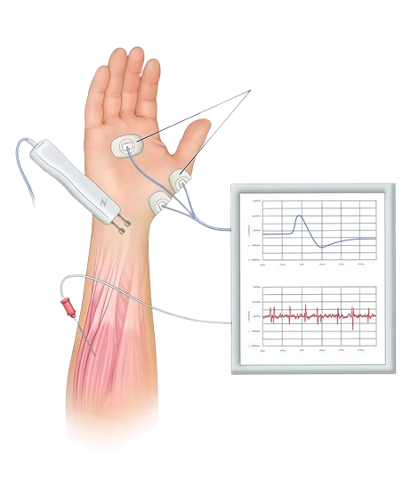

Electromiografía
EMG
Proyecto realizado con el fin de demostrar el funcionamiento de un EMG.Dispositivo que ayuda en el diagnostico de la Actividad Muscular
.
Est. Alan Yahel Ochoa

La electromiografía (EMG) es un procedimiento de diagnóstico que se utiliza para evaluar la salud de los músculos y las células nerviosas que los controlan. Los resultados del EMG nos ayudan a encontrar una disfunción nerviosa, muscular o problemas con el potencial de acción.
La electromiografía (EMG) es un procedimiento de diagnóstico que se utiliza para evaluar la salud de los músculos y las células nerviosas que los controlan. Los resultados del EMG nos ayudan a encontrar una disfunción nerviosa, muscular o problemas con el potencial de acción.
Para realizar un EMG se reqiere un sensor especial que amplifica y filtra la actividad eléctrica del musculo convirtiendola en una señal analógica simple que es leida por un microcontrolador
.
El senso EMG convierte los biopotenciales generados por los músculos en un único flujo de datos como salida. La señal de salida es analógica.
Posee unaa ganancia total relativa que va desde 213% hasta 3595%
Además de un filtro paso banda de 10 a 40Hz
.